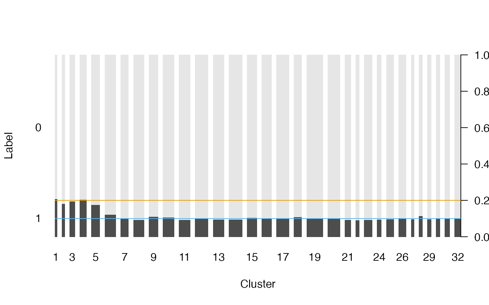
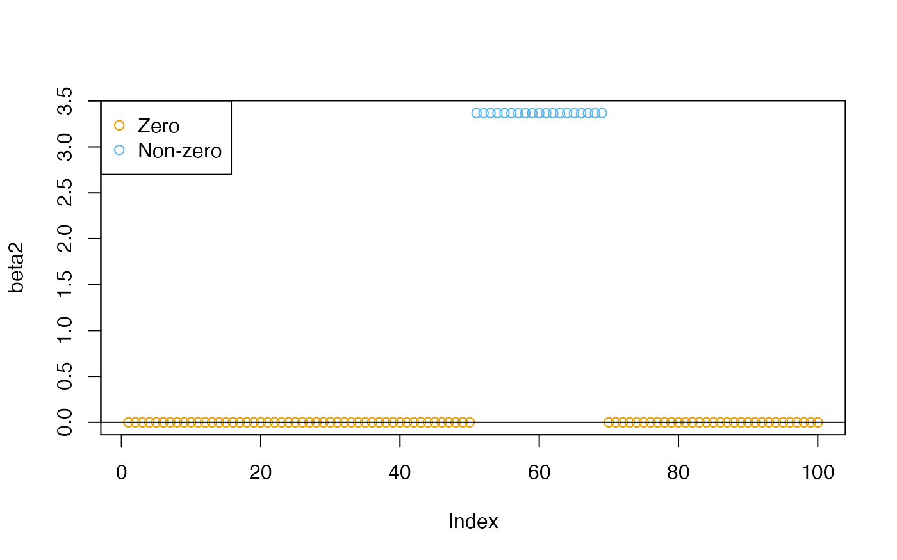
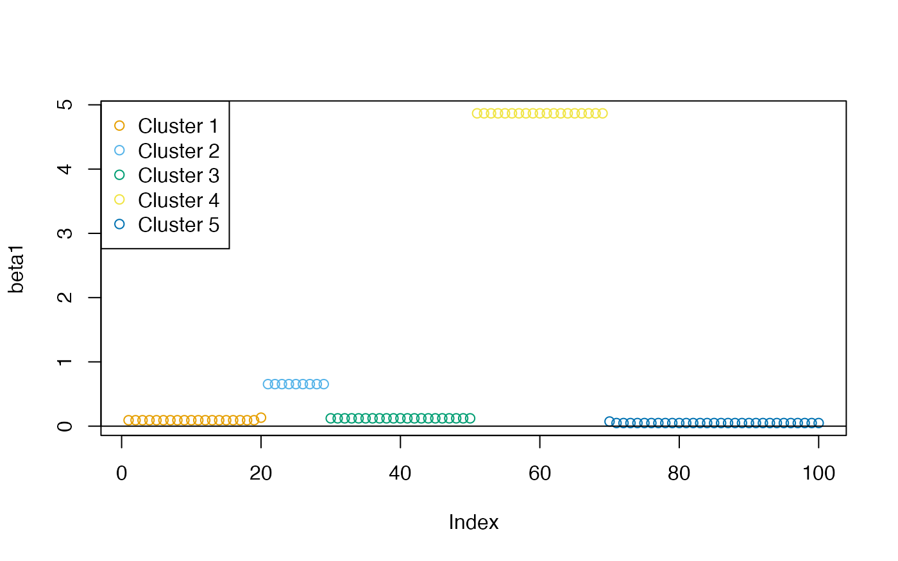
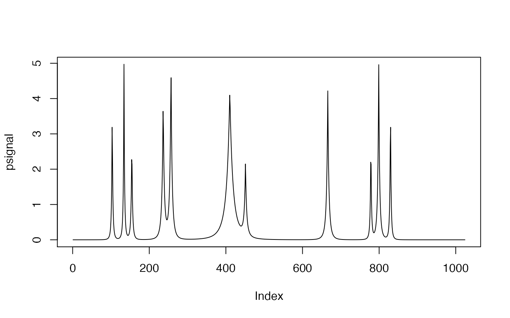
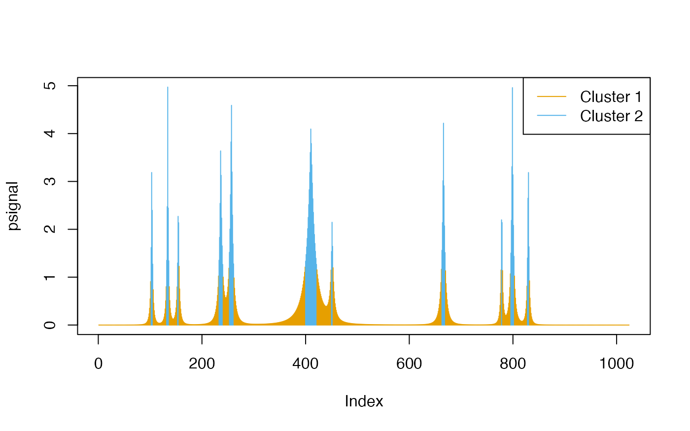

vignettes/oneclust.Rmd
oneclust.RmdThe oneclust package implements the maximum homogeneity clustering (partitioning) method for univariate data described in Fisher (1958) via dynamic programming. Given a one-dimensional numerical vector \((a_1, a_2, \ldots, a_n)\), a weight vector \((w_1, w_2, \ldots, w_n)\), and a positive integer \(k < n\), the algorithm seeks to minimize
\[ D = \sum_{i = 1}^{n} w_i (a_i - \bar{a_i})^2 \]
when each \(a_i\) is assigned into \(k\) clusters. \(\bar{a_i}\) is the weighted mean of the cluster that \(a_i\) belongs to. Fisher proved that the optimal partitions have to be contiguous when the data can be sorted. Contiguous means for \(i < j < k\), if \(a_i\) and \(a_k\) are assigned to the same cluster, then \(a_j\) must also be assigned to the same cluster — otherwise the partition would be suboptimal. This fact leads to a substantially reduced number of possible partitions and dynamic programming solutions.
Intuitively, maximum homogeneity clustering can be used to smooth the data and reveal its structures. It has some potential applications in data pre-processing and post-processing in statistical machine learning.
Categorical features with high cardinality or rare levels pose a common challenge when building certain types of supervised learning models. For example, classification trees might only be able to handle a limited number of levels in categorical predictors, because a binary node split on a categorical feature with \(l\) levels means finding one from \(2^{l-1}\) possible combinations thus computationally intractable.
To tackle this problem, Breiman et al. (1984) discussed splitting a categorical feature into two subsets when the response is binary, and generalized Fisher’s result to arbitrary convex node impurity functions. Lightgbm (Ke et al. 2017) employs this method to find the optimal split by sorting the histogram based on the training objective. As such, besides one-hot encoding and hashing, recoding high-cardinality categorical features with histogram sorting and maximum homogeneity partitioning could be a viable feature engineering strategy in practice. The application is also not limited to tree models.
In this section, we simulate a high-cardinality variable with a binary response. The key assumption here is: the probabilities of having which response correlate to the size of the level. After the data is generated, we use maximum homogeneity clustering on the (sorted) histogram of the categorical variable. Our goal is to verify if the clustering results can uncover this level size structure and potentially help the classification modeling later. This example is derived from the “rare levels” vignette in the vtreat package (Zumel and Mount 2016).
library("oneclust")
Generate a training set and an independent test set:
df_levels <- sim_postcode_levels(nlevels = 500, seed = 42) train <- sim_postcode_samples(df_levels, n = 100000, threshold = 3000, prob = c(0.2, 0.1), seed = 43) test <- sim_postcode_samples(df_levels, n = 100000, threshold = 3000, prob = c(0.2, 0.1), seed = 44)
The categorical variable has 500 (unique) levels of postal codes. The training and test set each has 100,000 samples. The level size follows a log normal distribution \(LN(\log(4000), 1)\). For postal code levels with fewer than 3,000 samples, they are defined as “rare levels” and has a probability of 0.2 to get response label 1. Otherwise, the level has a probability of 0.1 of getting response label 1. The rest of the samples will get a response label 0.
head(df_levels)
## size postcode
## 1 15756 z04113
## 2 2274 z04578
## 3 5751 z02580
## 4 7532 z01457
## 5 5993 z03546
## 6 3597 z04056head(train)
## postcode label is_rare
## 1 z04546 0 FALSE
## 2 z03223 0 FALSE
## 3 z01687 0 FALSE
## 4 z01301 0 TRUE
## 5 z00848 0 FALSE
## 6 z03046 0 FALSEhead(test)
## postcode label is_rare
## 1 z01482 1 FALSE
## 2 z03825 1 FALSE
## 3 z02533 0 FALSE
## 4 z03640 1 FALSE
## 5 z01608 1 FALSE
## 6 z02130 0 FALSEFor the training set, we cluster the postal codes into 32 clusters by the size of each level (histogram):
k <- 32 level_hist <- table(train$postcode) level_new <- oneclust(level_hist, k)$cluster feature_tr <- level_new[match(train$postcode, names(level_hist))] %>% as.character() %>% ordered(levels = as.character(1:k))
The postal codes belong to the first five clusters have a higher probability (approximately 0.2) of getting label 1. The other clusters have a lower probability (around 0.1) of getting label 1:
par(las = 1) plot(feature_tr, train$label, lty = 0, xlab = "Cluster", ylab = "Label") abline(h = 0.2, col = cud(1)) abline(h = 0.1, col = cud(2))

We can also verify that the number of the samples in the first five clusters is close to the actual number of samples in the “rare levels”:
sum(train$is_rare)
## [1] 10496## [1] 9693When the specified number of clusters \(k\) is smaller, the results might not be as good though.
In practice, we should encode the postal codes in the test set with the same cluster labels as we used in the training set, so that the classification models can be correctly applied to the test set.
feature_te <- level_new[match(test$postcode, names(level_hist))] %>% as.character() %>% ordered(levels = as.character(1:k))
Check if the recoded variable has the similar label pattern:
par(las = 1) plot(feature_te, test$label, lty = 0, xlab = "Cluster", ylab = "Label") abline(h = 0.2, col = cud(1)) abline(h = 0.1, col = cud(2))

sum(test$is_rare)
## [1] 10610## [1] 9883Besides sparsity and other properties, the homogeneity of the estimated coefficients in linear regressions is an important property — meaning certain groups of variables should be encouraged to share the same coefficients (Ke, Fan, and Wu 2015). The source of homogeneity could be attributed to the systematic similarities between variables, for example, financial assets that belong to the same sector, or sets of adjacent variables with strong spatial correlation (Lin et al. 2017).
We use an fused lasso regression model on simulated data to illustrate the potential application in post-processing the coefficients. The example is derived from the vignette in the genlasso package (Tibshirani, Taylor, and others 2011).
We can use soft-thresholding to transform the raw coefficient estimates into zero and non-zero values:
beta2 <- genlasso::softthresh(out, lambda = 1.5, gamma = 1) grp <- as.integer(beta2 != 0) + 1L plot(beta2, col = cud(grp)) abline(h = 0) legend("topleft", legend = c("Zero", "Non-zero"), col = cud(unique(grp)), pch = 1)

For time series data, the algorithm might be useful for calling peaks.
We use an example from pracma::findpeaks():
x <- seq(0, 1, len = 1024) pos <- c(0.1, 0.13, 0.15, 0.23, 0.25, 0.40, 0.44, 0.65, 0.76, 0.78, 0.81) hgt <- c(4, 5, 3, 4, 5, 4.2, 2.1, 4.3, 3.1, 5.1, 4.2) wdt <- c(0.005, 0.005, 0.006, 0.01, 0.01, 0.03, 0.01, 0.01, 0.005, 0.008, 0.005) psignal <- numeric(length(x)) for (i in seq(along = pos)) { psignal <- psignal + hgt[i] / (1 + abs((x - pos[i]) / wdt[i]))^4 } plot(psignal, type = "l")

Group the signal into two clusters:
cl <- oneclust(psignal, k = 2) plot(psignal, type = "h", col = cud(cl$cluster)) legend("topright", legend = paste("Cluster", unique(cl$cluster)), col = cud(unique(cl$cluster)), lty = 1)

Cluster 2 covers the peak locations — the method did not specify a single data point as the peak, instead, it finds intervals.
If we increase \(k\), there will be fewer intervals included in the peak cluster (Cluster 4), with narrower peak intervals:
cl <- oneclust(psignal, k = 4) plot(psignal, type = "h", col = cud(cl$cluster + 2)) legend("topright", legend = paste("Cluster", unique(cl$cluster)), col = cud(unique(cl$cluster + 2)), lty = 1)

One may also use the parameter w in oneclust() to use the weighted version of the algorithm and amplify the signal.
Breiman, Leo, Jerome Friedman, Charles J Stone, and Richard A Olshen. 1984. Classification and Regression Trees. CRC Press.
Fisher, Walter D. 1958. “On Grouping for Maximum Homogeneity.” Journal of the American Statistical Association 53 (284): 789–98.
Ke, Guolin, Qi Meng, Thomas Finley, Taifeng Wang, Wei Chen, Weidong Ma, Qiwei Ye, and Tie-Yan Liu. 2017. “Lightgbm: A Highly Efficient Gradient Boosting Decision Tree.” In Advances in Neural Information Processing Systems, 3146–54.
Ke, Zheng Tracy, Jianqing Fan, and Yichao Wu. 2015. “Homogeneity Pursuit.” Journal of the American Statistical Association 110 (509): 175–94.
Lin, You-Wu, Nan Xiao, Li-Li Wang, Chuan-Quan Li, and Qing-Song Xu. 2017. “Ordered Homogeneity Pursuit Lasso for Group Variable Selection with Applications to Spectroscopic Data.” Chemometrics and Intelligent Laboratory Systems 168: 62–71.
Tibshirani, Ryan J, Jonathan Taylor, and others. 2011. “The Solution Path of the Generalized Lasso.” The Annals of Statistics 39 (3): 1335–71.
Zumel, Nina, and John Mount. 2016. “vtreat: A Data.frame Processor for Predictive Modeling.” arXiv Preprint arXiv:1611.09477.